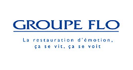

|
Mardi, 14 Décembre 2010 14:28 |
|  |
Le groupe Flo développe des partenariat spécifiques avec l’AFPA, le GRETA, des centres spécialisés pour permettre à des travailleurs handicapés d’obtenir en alternance un diplôme d’Etat en cuisine et d’intégrer par la suite le Groupe Flo en CDI. |
| En savoir plus... |
 |
|
|
Mise à jour le Samedi, 24 Octobre 2015 11:10 |